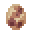

QuailsJapanese Quail

The brown barred farm quail of meadows and fields. The best layer: an egg every couple of minutes.
Bobwhite Quail
Chestnut, with a white throat and eye stripe. The wild quail of plains and field edges.
California Quail

Blue-grey with a black face and a curling plume. Lives in savanna and scrub.
Button Quail

The tiniest quail, slate-blue and chestnut. Hides in jungle and warm grassland.
Keeping quails
Quails live in small coveys. They eat seeds like chickens, breed with seeds, and lay speckled quail eggs.
They are flighty: walk up openly and they scurry off. Sneak, or hold seeds, to get close.
A fall never hurts them: they flutter down.
Eggs, meat, feathers
Quail eggs bake like any egg and fit a carton; thrown, one may hatch. Their barred feathers fletch arrows.
Cook raw quail in a furnace, smoker or on a campfire.